My collections
Table of Contents
1 About me
. 가난한 사람. . 모르는 것을 알기 위해 노력함. . 제주에 거주
공부하는 내용을 정리할 필요를 느꼈다. 블로그말고 홈페이지를 만들려고 했지만, 시간도 없고 무의미한 거 같아 org mode에서 작성하고 약간의 꾸밈을 줄려고 readthe org라는 framework?를 사용하기로 했다. 그런데 예상과 달리, 복잡한 과정이 필요했다. 단지 org모드에서 글을 쓰고 github에 올려 웹페이지로 보는것인데..의외로 많은 잡다한 일을 해야 했다. 이것을 기록으로 남기지 않으면 했던 일을 반복해야 한다. 그래서 그 과정을 쓰기로 한다. 나란 사람이 원래 그렇다. 했던거 반복하기. 취미이자 특기다.
2 정리과정
2.1 Project만들기 -(step 1)
첫번째 단계는 github에 repository를 만들고, local에 clone하고 changes를 github에 반영하기 위해서
git명령어를 알아야 한다.
2.1.1 github 만들기.
내가 쓴 글을 저장하고 웹으로 보여주기 위해 첫번째로 해야 할건, github에 계정을 만드는 것이다. 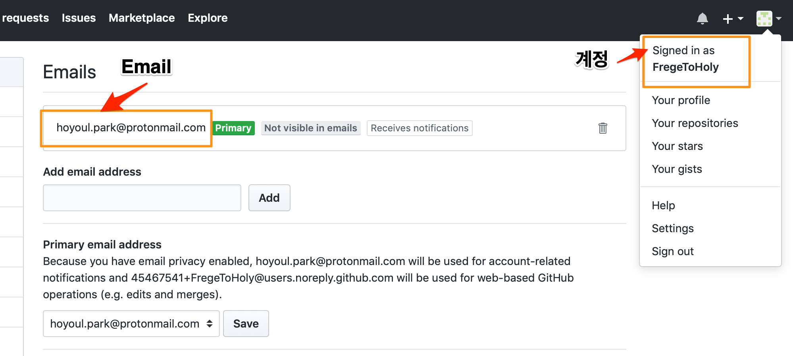
2.1.2 project folder
github을 만들었기 때문에 clone하면 RetroCS폴더가 만들어진다. 여기서 원하는 폴더와 문서를 작성하면 된다. 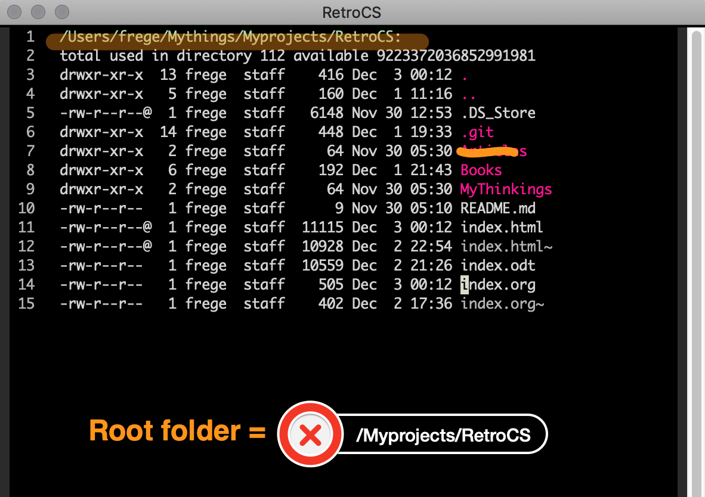
2.1.3 [기술] magit 사용법
github을 만들었기 때문에 github 저장소와 local machine간의 파일 전송및 이력관리를 위해 git을 사용할 줄 알아야 한다. emacs를 사용하기 때문에 magit을 사용한다. 모든 기능을 살펴보진 않고, 필수적인 기능을 살펴볼 것이다.
magit 설치
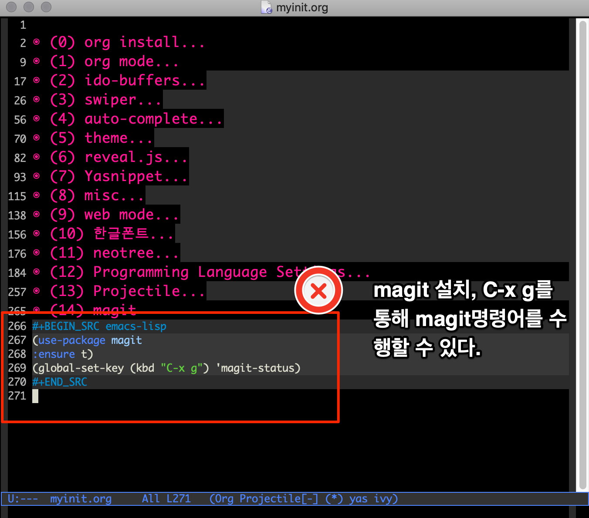
magit clone
좋은 동영상이 있어서 참조한다.
M-x magit-clone을 입력한 후, clone할 source address, target address를 입력하면 된다.
magit add
C-x g를 누르면 현재 git status(상태)가 보인다. untracked files(unstaged files)이 있다면 s를 눌러서 stage로 올릴 수 있다. 파일 하나 하나 stage가 가능하다.
[stage 이전] 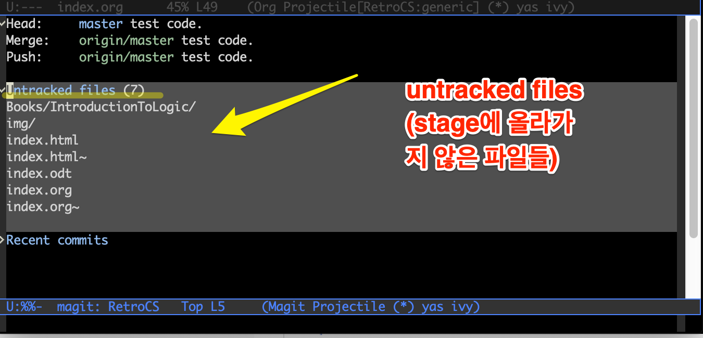 [stage 결과] 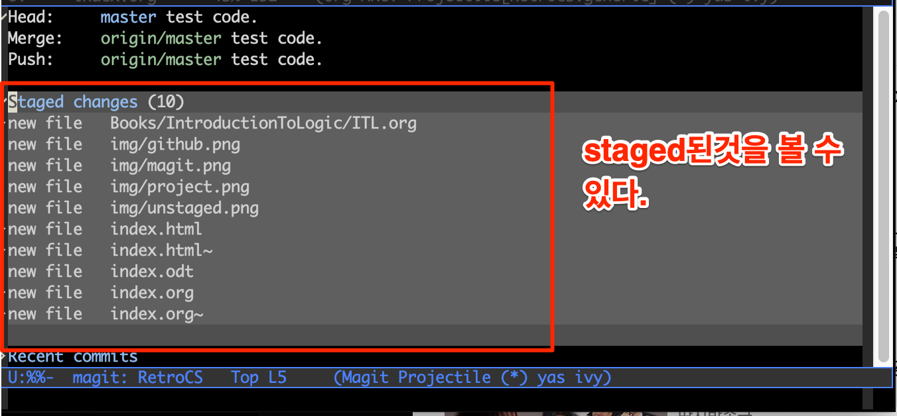
magit commit
staged changes라고 붙은 label아래 파일에 커서를 놓고 c를 누르면 popup menu가 뜬다. popup menu에 보면 c:commit이 있다. c를 눌러 commit을 하자. 그러면 message를 작성할 수 있는 buffer가 보인다. message를 작성한 후 C-c C-c를 누르면 commit이 완료된다. 물론 staged changed라는 label에 커서를 올려놓으면 모든파일을 한번에 commit할 수 있다는 것을 잊지말자.
[commit이전] [commit결과] 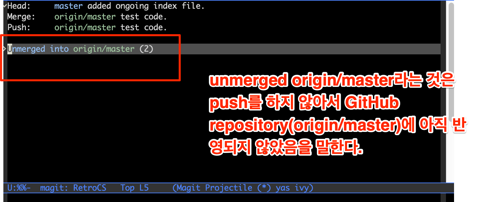
magit push
push는 p를 누르면 push가 될꺼 같지만, 그렇지 않다. 왜냐면 p는 previous line과 mapping되어 있기 때문에, P(capital P)를 누르고, popup menu에서 p를 누를때 push가 된다. 시간이 좀 걸린다는 것을 유념해라. 네트웍을 통해 파일을 전송하기 때문에, 늦더라도 계속 P를 누르지 마라.
[push이전] [push이후] 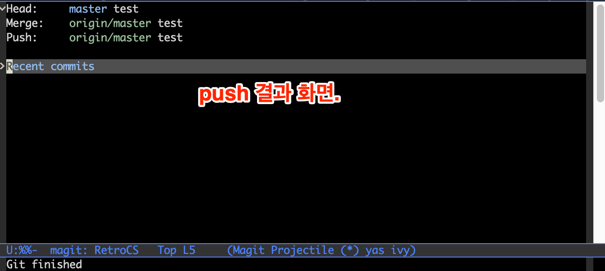
2.2 Project만들기 -(step 2)
2번째 단계에선 우리가 문서를 만든다. readtheorg형식을 단축키로 사용하기. admonition list 사용하는법을
기술한다.
2.2.1 [기술] yasnippet사용법
yasnippet의 사용법은 간단하다. yasnippet을 만들고 사용하고 수정할 수 있으면 된다. 그런데 우리가 그렇게 사용하고자 할 때, 약간의 문제가 있다. 단축키 문제다. 우리가 사용하는 org mode에선 yasnippet의 단축키가 중복이된다. 그래서 그것을 변경해야 한다.
[yasnippet 단축키 변경] (1) C-c n: snippet 만들기. (2) C-c s: snippet 삽입하기. (3) C-c v: snippet 변경하기. 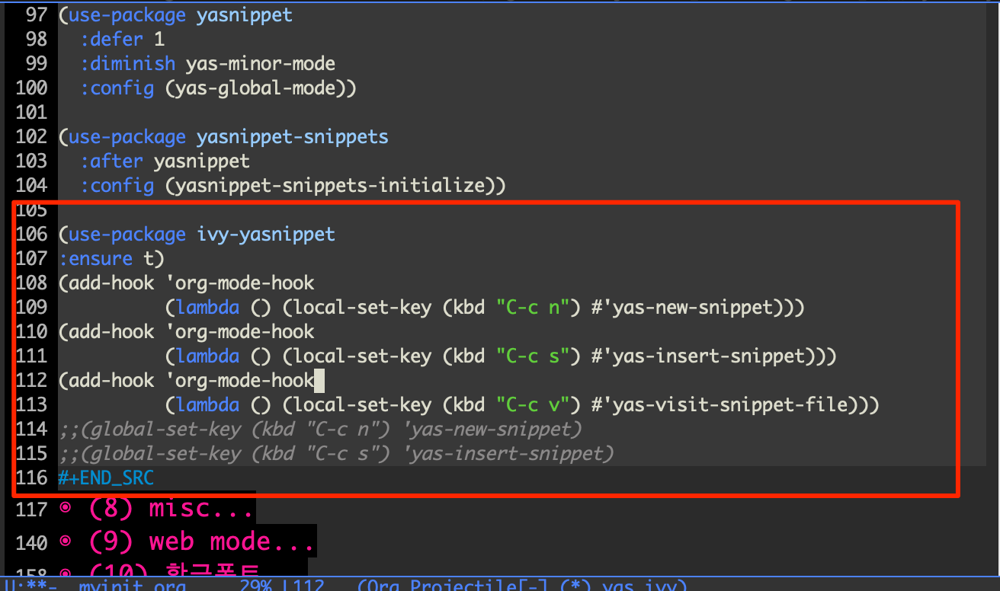
- snippet 내용.
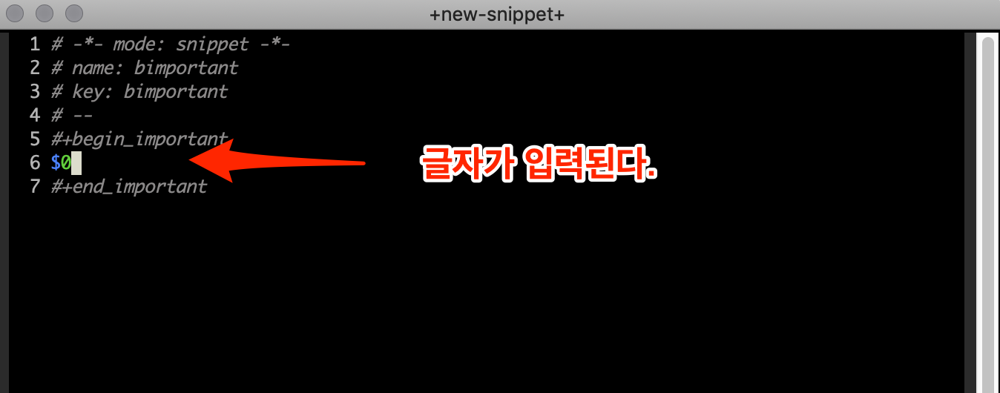
2.2.2 yasnippet list
readtheorg header
snippet삽입할때 name(readtheorg_header)을 선택한다.
admonition list
(1) name:bnote
This is a useful note.
(2) name:bwarning
Be careful! Check that you have…
(3) name:btip
Try doing it this way…
(4) name:bcaution
Caution
(5) name:important
Important
(6) name:battention
Attention
(7) name:bleft
This text is
aligned to the left!
(8) name:bcenter
This text is
centered!
(9) name:bright
This text is
aligned to the right!
(10) name:bexample
10/17/97 9:04 <DIR> bin 10/16/97 14:11 <DIR> DOS 10/16/97 14:46 <DIR> TEMP 10/16/97 14:37 <DIR> WINNT 10/16/97 14:25 119 AUTOEXEC.BAT 2/13/94 6:21 54,619 COMMAND.COM
(11) name: bquote
Everything should be made as simple as possible, but not any simpler. – Albert Einstein
(12) name:bverse
Everything should be made as simple as possible,
but not any simpler. – Albert Einstein
2.3 Project만들기 -(step 3)
마지막으로 해야할 것은 domain주소와 연결하는 것이다.
2.3.1 Domain구입
| domain주소 | 구입처 | id |
| holytofrege.space | gabia | neophhot |
2.3.2 github settings
github에서 githubid.github.io란 repository를 만든다. settings에서 custom domain을 설정. 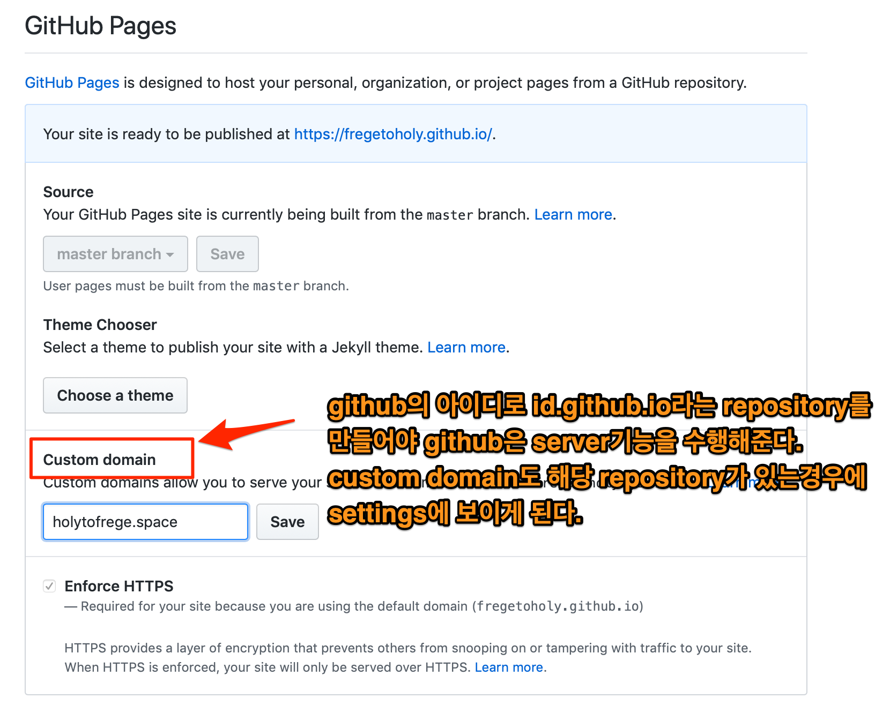
이렇게 하면, 자동으로 CNAME파일이 생긴다.
2.3.3 gabia settings
gabia의 dns를 세팅한다. 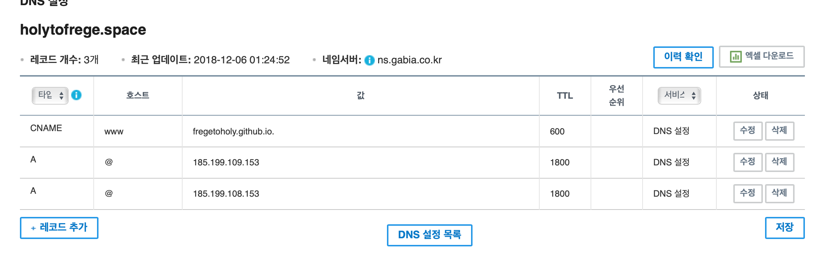